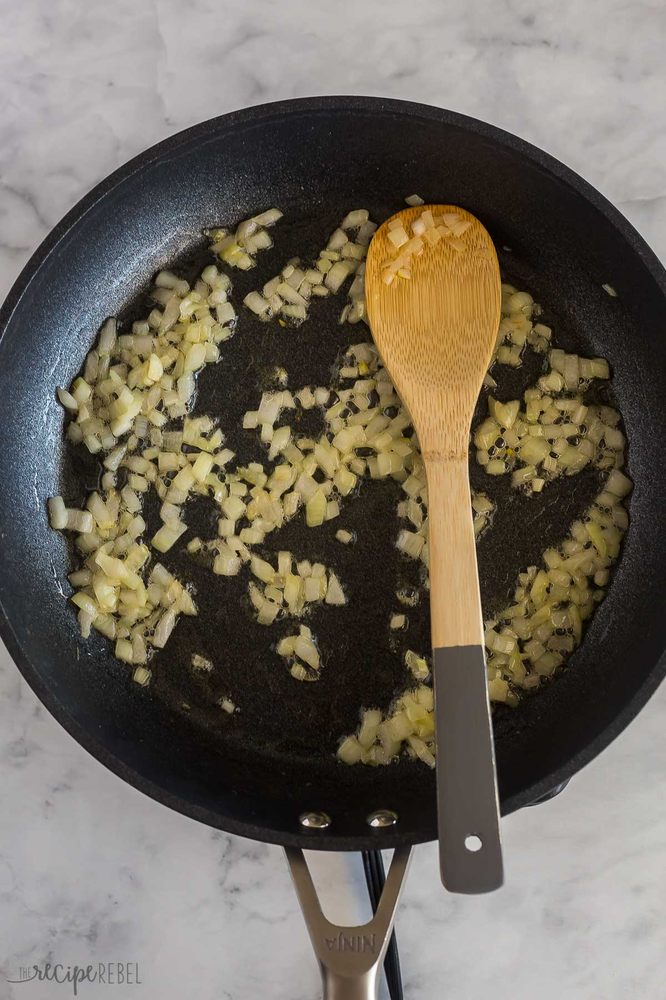
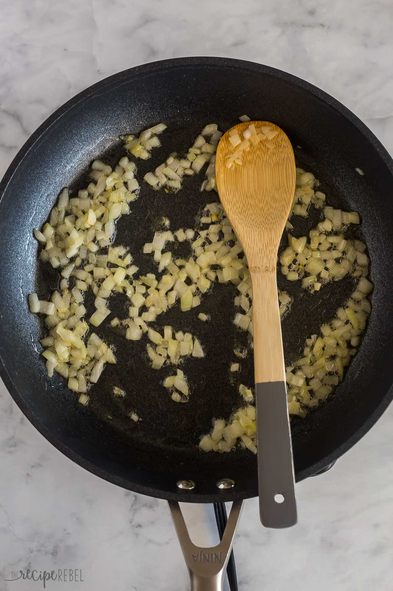

Tres Leches Cake
Origin: Latin America Source: Link Category: Dessert
This cake is a staple at any Latin birthday or celebration. While I haven’t learned exactly how to make it, if you ask any aunt or mother they’ll typically know how to make it and have their own secrets and tips to make it the “best way.” The cake is typically very moist and is best eaten wet.
Recipe Ingredients
- 1 1/2 cups all-purpose flour
- 1 teaspoon baking powder
- 1/2 cup unsalted butter
- 1 cup white sugar
- 5 eggs
- 1/2 teaspoon vanilla extract
- 2 cups whole milk
- 1(14 ounce) can sweetend condensed milk
- 1(12 fluid ounce) can evvaporated milk
- 1 1/2 cups heavy whipping cream
- 1 cup white sugar
- 1 teaspoon vanilla extract
Recipe Steps
- Preheat the oven to 350 degrees F (175 degrees C). Grease and flour a 9x13-inch baking pan.
- Sift flour and baking powder together; set aside.
- Beat sugar and butter together in a large bowl with an electric mixer until light and fluffy. Add eggs and vanilla; beat well. Add flour mixture, about 1/2 cup at a time, mixing until well blended. Pour batter into the prepared pan.
- Bake in the preheated oven until a toothpick inserted into the center comes out clean, about 30 minutes. Pierce cake all over with a fork; let cool to room temperature.
- Mix whole milk, condensed milk, and evaporated milk together in a bowl; pour over the top of the cooled cake and allow to soak in.
- Whip cream, remaining 1 cup of sugar, and 1 teaspoon vanilla in a chilled glass or metal bowl with an electric mixer until thick. Spread over the top of the filling. Keep cake refrigerated until serving.
Additional Food images

White Sauce Pasta
Origin: France/Italy Source: Own Recipe Category: Main Dish
White sauce pasta is a creamy and savory dish that can be enjoyed for either lunch or dinner. Inspired by a fusion of Italian and French cuisine, the rough texture of rigatoni pasta allows for heavier sauces to be picked up, including the flavor profile of this delicious sauce. This union of two cultures allows for the perfect balance between each component of the recipe, creating a fulfilling entree that every individual can enjoy.
Recipe Ingredients
- Olive Oil
- Butter
- Diced Onion
- Diced Garlic
- Diced Bell Pepper
- Rigatoni Pasta
- Heavy Whipping Cream
- Milk
- Shredded Parmesan Cheese
- Salt
- Ground Pepper
- Garlic Powder
- Onion Powder
- Paprika
- Oregano Leaves
- Bay Leaves
- Parsley Leaves
Recipe Steps
- Bring a pot of water to a boil. Once the water begins to bubble, add in the pasta, salt, and a drizzle of oil.
- While the pasta is cooking, heat oil and butter in a saucepan.
- Once the butter has melted, add in diced onions and garlic. Sauté them until golden brown or aromatic.
- Stir in the bell pepper until slightly softened.
- Pour in the heavy cream, milk, salt, ground pepper, garlic powder, onion powder, paprika, oregano leaves, and bay leaves into the saucepan. Mix well and allow for the mixture to simmer. Adjust the seasoning to your taste.
- Add the shredded parmesan cheese and stir until melted.
- Throw in pasta and mix until the pasta is coated with the creamy sauce.
- Garnish with parsley leaves, and enjoy.
Additional Food images
 


Peanut Butter and Jelly Sandwich
Origin: American Source: Alex Likens Category: Main Dish
This is a dish that is great at all times of year. Its mix of savory flavors with sweet jelly make sit a favorite dish for many people. This dish is great for any situation whether you are on the go, in a rush, or just looking for a tasty meal in your home.
Recipe Ingredients
- Bread
- Peanut Butter
- Jelly
Recipe Steps
- Take two piece of bread and place them on a plate
- Put a thick layer of jelly on one piece of the bread
- Put a thick layer of peanut butter on the other piece of the bread
- RPut the two pieces of bread together so they face each other
Additional Food images